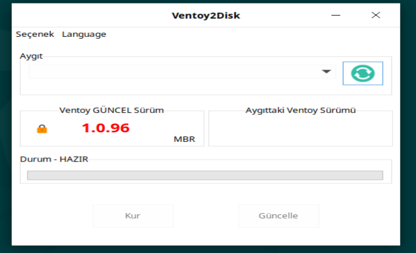
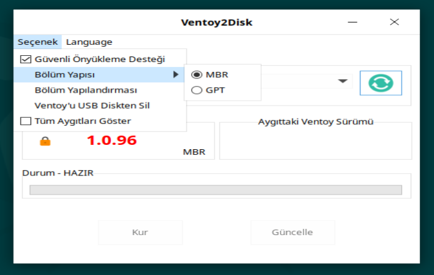
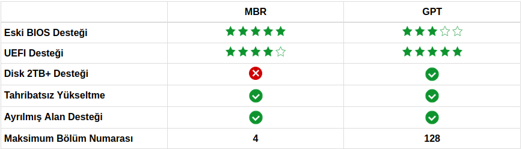

Ventoy Hazırlama¶
 {kind=link}
{kind=link}
Ventoy usb disk içine birden fazla iso dosyası kopyalayıp istediğimizden başlatma imkanı sunan bir kurulum aracıdır.
MBR-GPT¶
{kind=link}
Yukarıdaki resimde ventoyu oluştururken nelere dikkat etmemiz gerektiğini gösteren ifadeler bulunmaktadır. Bu durumları detaylıca anlatalım.
MBR mi?¶
2GB'dan daha düşükse usb diskimiz MBR yapılabilir. Burada acaba UEFI destekler mi? Destekler ancak UEFI donanım yazılımının yalnızca GPT biçimindeki diski tanıdığı bazı makineler vardır, bu nedenle MBR bu durumda uyumlu OLMAYACAKTIR.
GPT mi?¶
2GB'dan daha yüksekse usb diskimiz GPT yapılabilir. GPT, UEFI özelliklerinin bir parçasıdır, dolayısıyla GPT, herhangi bir uyumluluk sorunu olmadan UEFI'yi destekler. Ancak Legacy(Eski BIOS) için bazı makinelerde bazı uyumluluk sorunları olabilir.
Ne Yapmalıyım¶
Burada verilen bilgileri yukarıda gösterilen resimdeki tablodan yorumladık. Bu resim ventoyun resmi sitesinden alınmıştır. Neticede ne yapmamız gerektiği konusunu şu şeklide ifade edebiliriz.
MBR hazırlanan USB diskler bazı bilgisayarlarda UEFI kurulumu yapamayabilir.
UEFI hazırlanan USB diskler bazı bilgisayarlarda Legacy(Eski Bios) kurulum yapamayabilir.
Bu durumda dört ihtimal oluşuyor.
- Legacy(Eski Bios)
MBR Olarak hazırlanan Ventoy : Kurulur.
UEFI Olarak hazırlanan Ventoy: Kurulmayabilir.
- UEFI(Yeni Bios)
MBR Olarak hazırlanan Ventoy : Kurulmayabilir.
GPT Olarak hazırlanan Ventoy : Kurulur.
En garanti yöntem iki farklı USB hazırlamak. USB'nin birisi MBR, diğerini ise GPT olarak hazırlamalıyız.